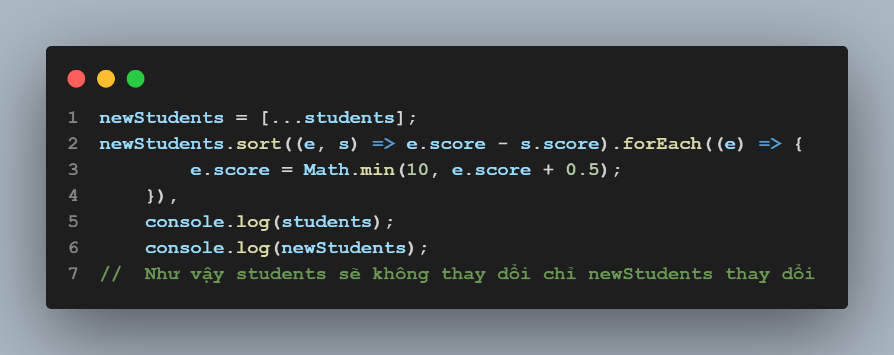

Khi truy cập 1 trang web (VD: https://geekadventure.vn) trình duyệt sẽ làm gì?
Trả lời: Web hoạt động theo mô hình client-server, khi truy cập trình duyệt sẽ gọi tới máy chủ DNS để biên dịch URL trang web thành một địa chỉ IP, sau đó trình duyệt sẽ tạo kết nối TCP đến server, server xử lý request sau đó trả về một response cho client là 1 trang giao diện HTML mà ta có thể quan sát và tương tác.
Nếu có 2 CSS Selectors cùng ứng với 1 element thì style của element sẽ thể hiện như thế nào?
Trả lời: Style của element đó sẽ được thể hiện theo thứ tự ưu tiên của CSS Selectors từ cao đến thấp đó là inline -> id -> class -> tag, có thể ưu tiên style bằng cách thêm !important
Callback & Promise trong JavaScript dùng để làm gì ?
Trả lời: Callback là một hàm được
truyền vào một hàm khác như một đối số, callback để đảm
bảo cho code không được thực thi cho đến khi code khác
thực hiện xong
Promise dùng để xử lý việc gặp phải
tình trạng callback hell
Câu 1: Sau khi chạy đoạn code ở mẫu ở section 4 thì students[0].score sẽ mang giá trị gì? Giải thích.
Câu 2: Độ phức tạp khi set score làm tác vụ chính là bao nhiêu ? Viết lại code để đảm bảo students không bị thay đổi.
Trả lời:
Câu 1: Sau khi chạy code giá trị của students[0].score là 6.5
Giải thích: Vì hàm sort theo mẫu sẽ sắp xếp mãng theo chiều tăng dần, sau đó chạy vòng lặp foreach với mỗi phần tử của student thì score của phần tử đó + thêm 0.5 được so sánh số nhỏ nhất với 10. Mãng sau khi sắp xếp thì students[0] là Davis id=2 với score=6 và được cộng thêm 0.5 nữa nên kết quả là 6.5
Câu 2: Độ phức tạp là O(n)
Code lại: Phần khai báo students giữ nguyên
